A little guidance. A lot you can do.
Find your next step on your computer, your phone, or both.
Windows desktop
Start here. Make it your own.
Your everyday tools, from the first conversation to a plan you can follow.
Make yourself at home.
Choose your name and your assistant’s name, then let the tour show you around. You can skip a stop and come back later.
On first start, read the Terms of Service. If you agree, check the agreement box and choose Accept and continue.
In the tour, enter Your name and, if you like, Your assistant’s name (optional). Choose Next.
Choose your offline downloads and cloud services, or continue through the tour. To repeat it later, open System → Help →
Take the tour again.
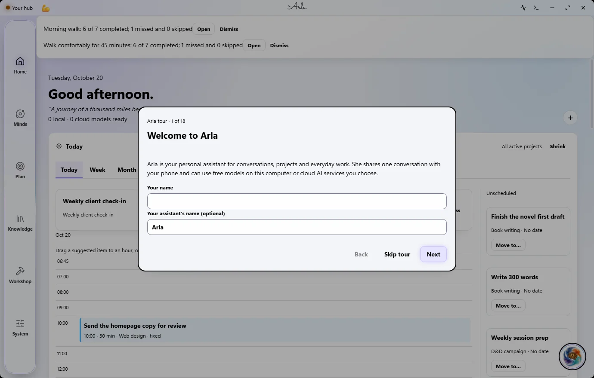
Windows desktop · sample data
Start with a conversation.
Open your assistant from any page. Ask a question, describe what you need, or talk instead of typing.
Select the assistant’s name at the top of the window or the floating orb. Type in the message box and choose Send.
For voice input, select the microphone, speak, then select Stop and transcribe. Review the text before sending. Speech
models must be set up first.
Select Read aloud on a finished reply to hear it. Open Details, when shown, to see what Arla did and which model
answered.
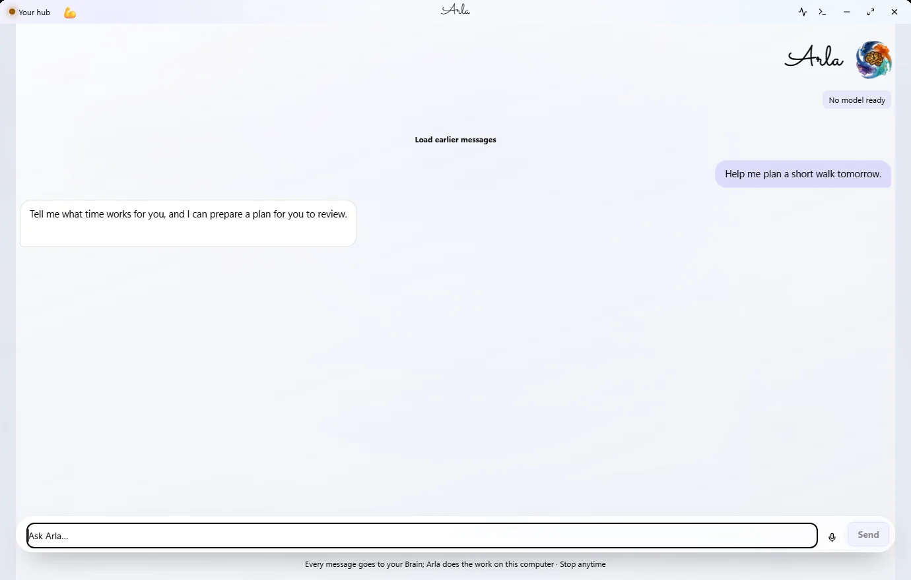
Windows desktop · sample data
Review it. Then make it yours.
When Arla proposes an action, the editable review form opens beside your desktop chat. Check the details before
confirming.
Ask Arla for a plan, task, or another supported action. Review the form beside the conversation; on a narrow window, use
Back to chat to return.
Edit the proposed fields, then choose the form’s confirmation button. The same choices are also available in the chat.
If the completed action offers Undo, select it to reverse that batch. Read any conflict message before replacing later
edits.
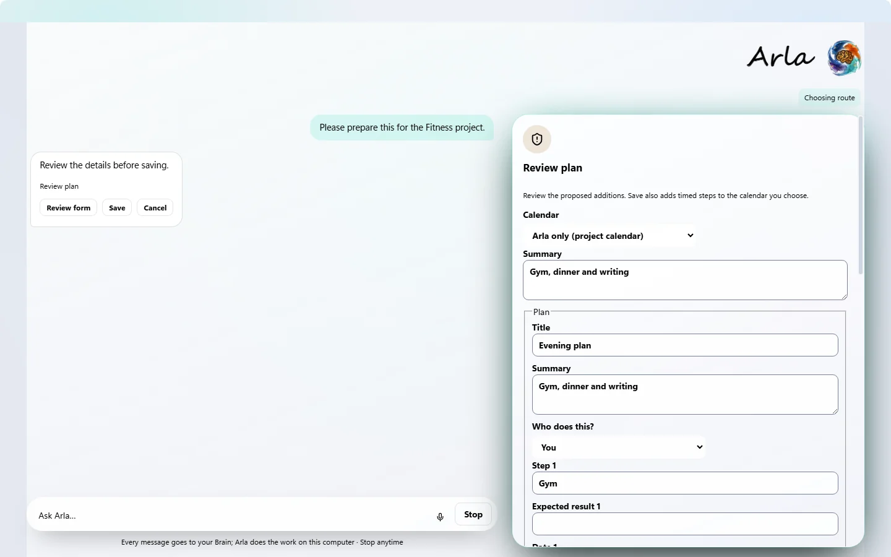
Desktop review form with a disposable sample plan.
Give your next task a place.
Plans
&
Timeline brings your active project’s work together. Today helps you choose what to do next.
Open Plan → Plans
&
Timeline. In Add an Action Item, choose Add an item.
Choose Task under Type, enter a Title and the dates you need, then choose Add.
Use the Timeline marks to open an item. Expand Today to review your next steps.
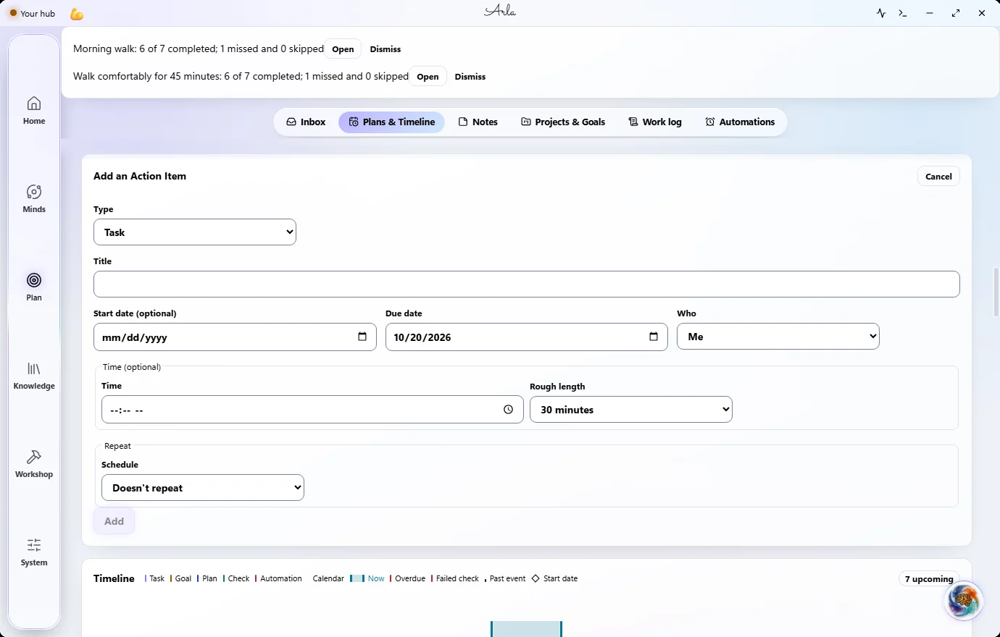
Windows desktop · sample data
Turn a goal into a daily rhythm.
Goals describe an outcome. Plans break work into dated steps; routines repeat; checks review progress. Choose whether
you or Arla does the work.
Open Plan → Plans
&
Timeline → Add an item. Choose Goal, Plan, Routine, or Check under Type.
Fill in the fields for that type: plan steps, a goal’s purpose, a routine’s instructions, or What it checks and How to
tell it passed.
Review who does the work and the schedule, then choose Add. For a goal with a plan or routine, open its controls to
review progress or pause it.
Automations are scheduled jobs for Arla. The separate Plan → Automations page manages those jobs; it is different from
your own repeating routine.
Windows desktop · sample data
Keep each project in context.
Projects keep instructions and work together. Switch projects before adding work so it goes to the right place.
Open Plan → Projects
&
Goals and choose New project.
Set its name, folder if needed, and project brief. Choose Save.
Choose Load on a project, or use Switch project in the title bar.
Windows desktop · sample data
Set up a regular job for Arla.
Automations run on local models for the selected project. Keep the desktop app open when you want scheduled jobs to run.
Open Plan → Automations and choose New automation.
Set the instructions, schedule, destination, and local model. Choose Save changes.
Turn the automation on when you want it scheduled. Use Run now for an explicit run, then open its details to review
results and failures.
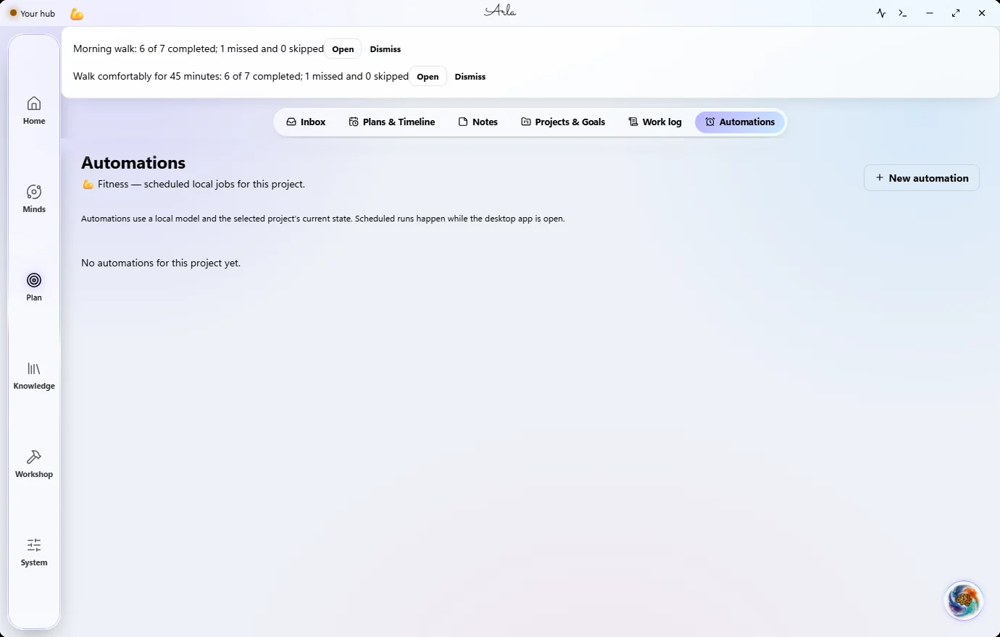
Windows desktop · sample data
Build a Home that fits your day.
Choose the panels you want close at hand, then arrange and style them.
On Home, choose Add a panel to enter edit mode. Choose it again to open the panel gallery.
Add a panel or a template. Use Panel settings to adjust its size and appearance.
Choose Save layout when you are happy, or Cancel to leave the previous layout in place.
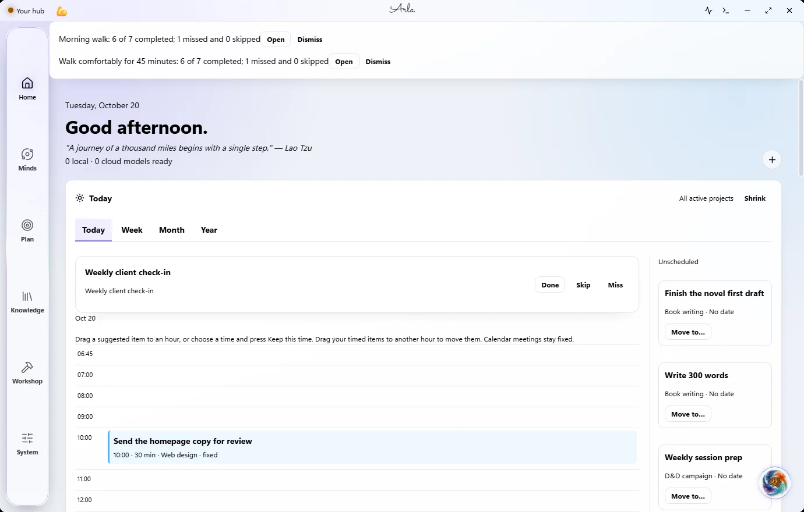
Windows desktop · sample data
Keep a small thought in view.
Sticky notes belong to the current project. Place them on the board and pin the ones you want on Home.
Open Plan → Notes and choose New note.
Type your note. Drag its card to move it, or double-click it to open its own window.
Use the note’s Home control to show or hide it on Home. Add the Sticky notes panel on Home if you need it.
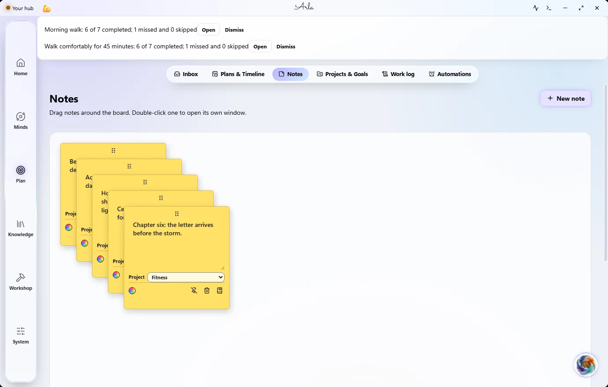
Windows desktop · sample data
Catch the thought before it goes.
Capture text, links, or files into the current project’s Inbox. Review the filing suggestions when you are ready.
Open Plan → Inbox, or press Ctrl+Alt+I for quick capture.
Type a note, paste a link, drop a file, or choose the paperclip. Select Capture.
Leave File automatically off if you want to review each filing suggestion first. Use Show filed items to see completed
filing.
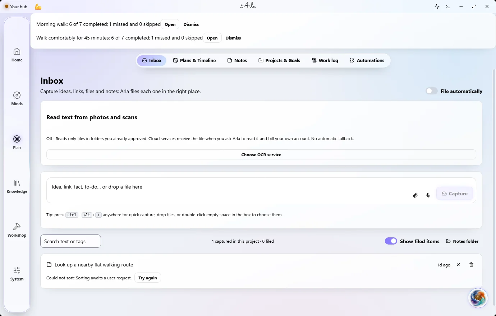
Windows desktop · sample data
Find what you have already shared.
Memory keeps facts and notes available for later conversations. Review what is kept and remove what you no longer want.
Open Knowledge → Memory. Use Search memories to find a fact or note.
Use Pin to keep a memory prominent, or Forget to remove it.
Choose Organize memories when you want Arla to tidy its saved memories.
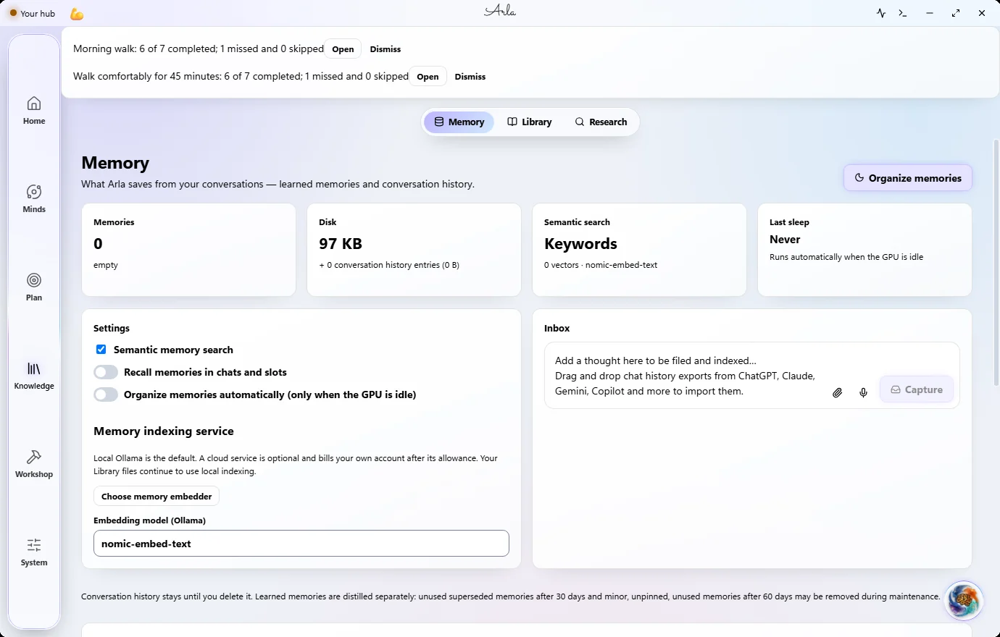
Windows desktop · sample data
Ask questions of your own documents.
Library makes the folders you choose searchable. Update the index after adding or changing files.
Open Knowledge → Library. Under Folders, choose Add folder and select documents you want included.
Choose Update library to index them. The Files, Passages, Index size, and Status cards open more detail.
Type in Search your library to find a passage, then select its file link to open the original.
Windows desktop · sample data
Research a question. Keep the sources.
Standard Research handles a focused question. Deep works through several steps and uses more searches and model
requests.
Open Knowledge → Research. Under Research depth, choose Standard or Deep (several steps, more searches).
Enter your question and choose Ask. Review the answer and its sources; a failed search or unavailable service is shown
in the app.
Choose Save as research, add tags if useful, then Save. To keep your own notes instead, choose New item in Your
research.
Web research needs a working AI and search route. Optional search services use your own account or key; their limits and
costs apply.
Windows desktop · sample data
Give a conversation the right voice.
Personas have their own instructions, personality, and preferred model. Your main assistant’s name remains yours to
choose.
Open Minds → Personas. Choose New persona, or select an existing persona to edit it.
Set its name, Instructions, personality traits, and Preferred model. Edits are saved as you make them.
Choose Chat with the persona to start its chat. You can also open a persona from Home.
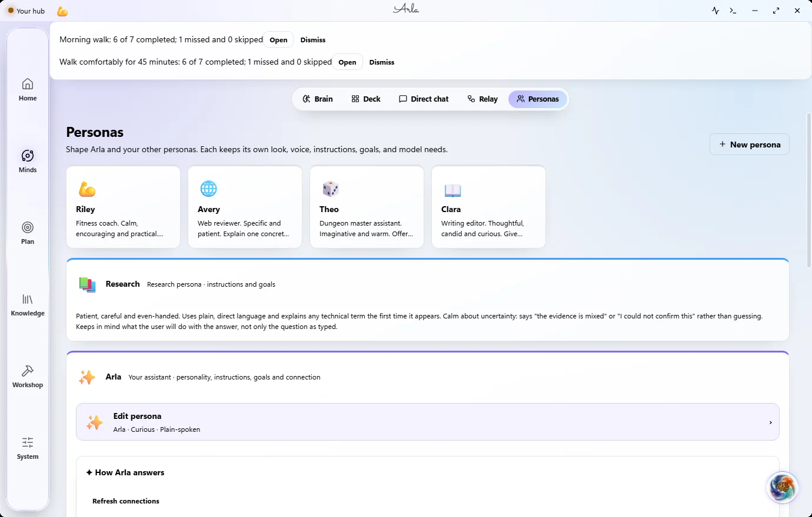
Windows desktop · sample data
Start with a free cloud option.
A cloud AI can give Arla stronger answers online. Each service uses your own account and key; free plans still have
limits.
Open System → Settings → AI services → Connect a cloud AI, step by step.
Choose a service marked free. Follow its on-screen account instructions, paste your key, then choose Connect and test.
Open Workshop → Models to review checked cloud models and manage local downloads. Read the free or paid choice before
enabling paid use.
Arla checks models against your key. A model appearing in a service’s list does not guarantee that it can answer with
your account.
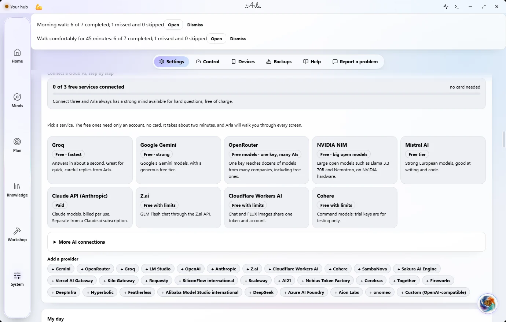
Windows desktop · sample data
Know what is answering.
Arla uses your working Brain and can switch to another healthy Brain when a request fails safely. The offline model is
the local fallback.
Open Minds → Brain to choose a preferred Brain, or use Auto for the strongest connected one.
Open Minds → Personas, expand your assistant’s section, then expand How Arla answers to review its connection.
If you want the optional fallback, turn on Free public chat when no Brain answers (OVHcloud). It only talks and cannot
perform actions.
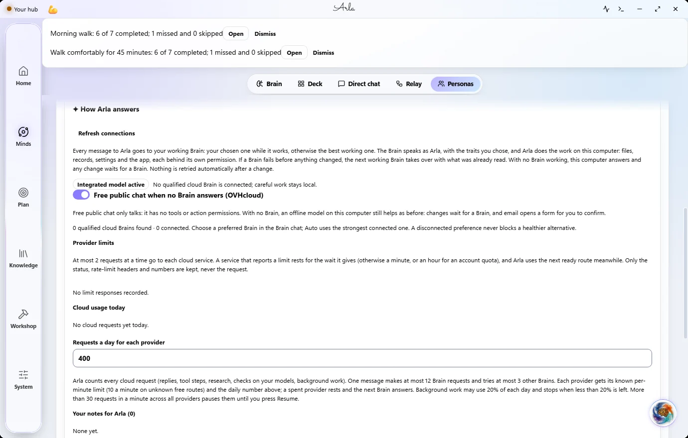
Windows desktop · sample data
Hand a coding task to your own assistant.
Claude Code, GitHub Copilot, and Muse Code run on your own signed-in accounts and use those plans’ usage.
Open Workshop → Tools → Assistants that code. Use the assistant’s Installation page if it is not installed, then reopen
Tools.
Choose Sign in for the assistant you want to use. Arla does not receive your login.
Choose Hand it another task when available. Enter the Task, choose its Folder and assistant, review Let it run commands
(tests, builds), then select Start.
Coding assistants edit the folder you choose. Arla’s Undo does not cover their changes; use Git or the assistant’s own
undo. Muse Code’s Contributor mode has its own training setting.
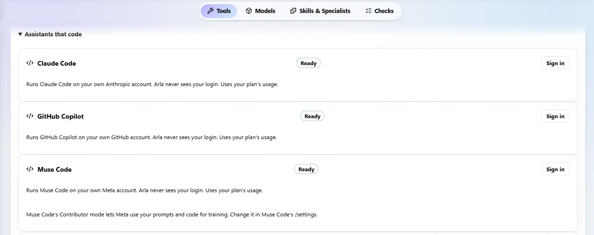
Windows desktop · sample data
Make room for an image.
Image Studio can generate images, search supported image services, and keep a local gallery. Connect and enable the
service you want first.
On Home, use Add a panel to add Image Studio. Open the panel to work with it.
Choose Generate or Search, select an available service, enter your description or search words, then choose Generate or
Search.
Choose Save to gallery on a result. Open Gallery to view saved images and use Export when you want a copy.
Cloud generation uses your own connected service and allowance. Check a searched image’s licence and credit before using
it.
Windows desktop · sample data
Choose what Arla can read and change.
Ask for a specific file action, then review the approval. Reading a file can send its contents to the Brain you
selected.
Open Minds → Personas, expand your assistant’s section, then Permissions for brains. Review Writing files and File
contents outside the workspace.
Ask Arla to read or change the files you name. Approve only the resolved folder or file action shown in the chat.
After a supported file change, use Undo on the reply or open System → Devices → Your computer · Recent changes by Arla.
Read any refusal if the file has changed since.
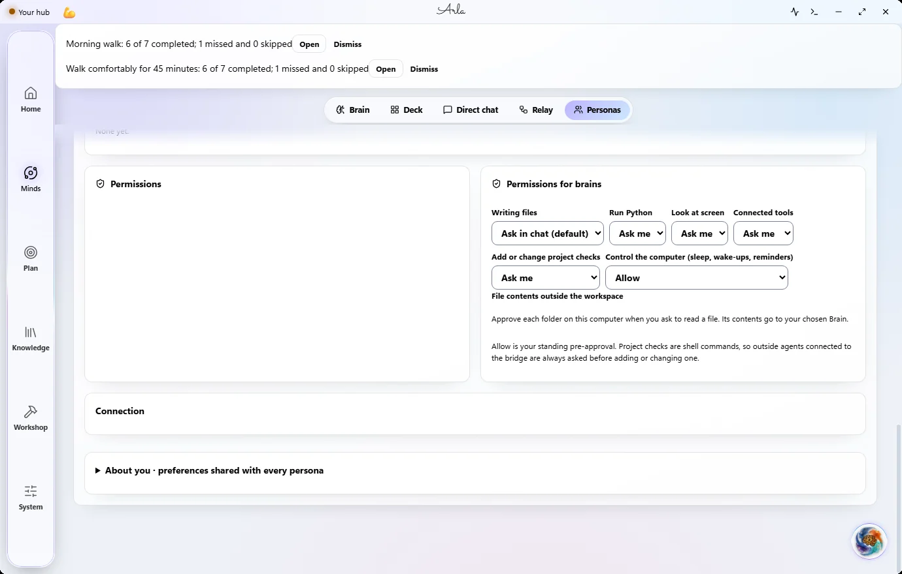
Windows desktop · sample data
See the work—and the known cost.
Work log shows project work and usage details. Unknown prices stay unpriced; the displayed total is not a complete bill.
Open Plan → Work log to review Up next, In progress, and Done.
Select AI cost today to open Usage details. Check the service, model, and purpose breakdowns.
Read the not priced count alongside the dollar amount. Unknown calls are excluded from that total.
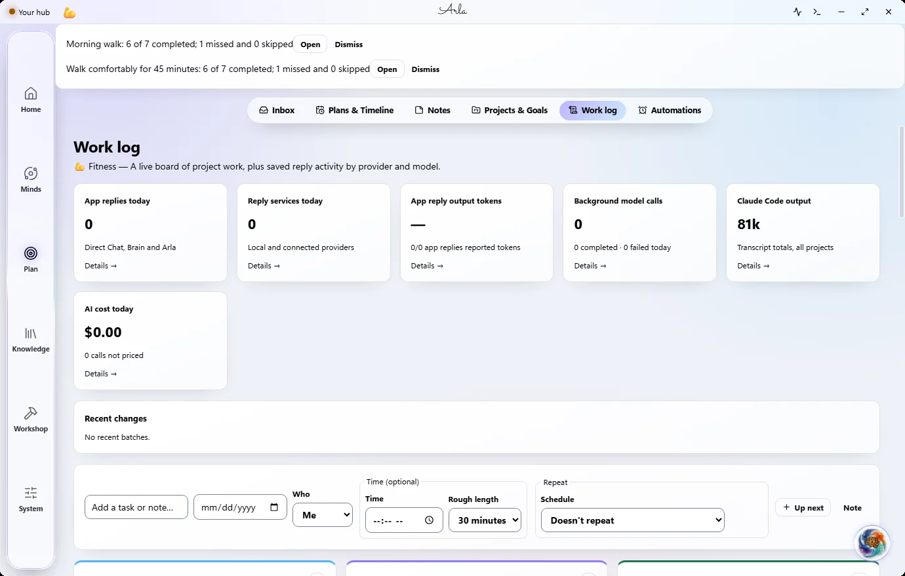
Windows desktop · sample data
Early access
Connect only the accounts you choose.
Email and calendar are Early access. Use your own Google or Microsoft account and review the access requested during
sign-in.
Open Workshop → Tools → Email and calendar. Choose Connect Google or Connect Microsoft when available in your build.
Choose the calendars you want in Today. Use Sync now to refresh them.
Ask Arla for an email or calendar action, review the form, and confirm its details. Sending an email requires the
separate Send now confirmation.
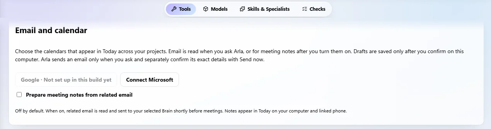
Windows desktop · sample data
Early access
Let one answer feed the next.
Relay is Early access. Build a short chain of models or Deck slots, with each step able to use the previous answer.
Open Minds → Relay and enter the request in Input.
Choose a Deck slot or model for each step and edit its instruction. Add a step if needed.
Choose Run relay. Use Stop to cancel a running chain.
Connected cloud services use your own account or key. Each step can use that service’s allowance.
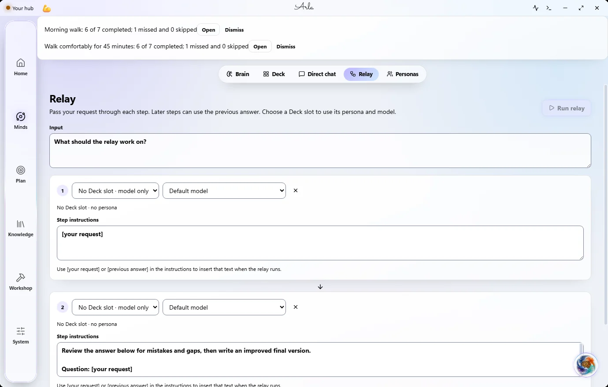
Windows desktop · sample data
Keep the controls close.
Settings lets you manage appearance, voice, services, and backups. Review permissions before connecting services or
sharing files.
Open System → Settings to review your preferences and connected AI services.
Open System → Backups to review your backup options.
Read the Privacy policy linked below for what stays on your devices and what connected services receive.
Use the phone on its own, or link it to your computer when you want to share work.
Your day, within reach.
Home brings together panels for your day, projects, and quick capture. The Android app also works on its own.
Open Home from the navigation bar. Tap a panel to open its details.
Tap Customize Home to arrange the panels you want. Tap a project in the project bar before adding project work.
Open Plan for Today, tasks, goals, plans, routines, Timeline, and notes.
Keep the conversation with you.
Talk to your assistant from the phone. A linked computer can answer when available; the phone can use its own connected
AI or downloaded offline model.
Tap your assistant to open its chat. Type your message, or use the microphone, and send it.
Review any action form and its confirmation choices before saving. Use Undo when the completed action offers it.
Open System for voice preferences. Keep the screen awake while a reply is being written if Android sleep interrupts it.
Bring an offline model along.
Downloaded offline chat models run on this phone without a cloud key. Larger packs need more space and memory.
Open Workshop and expand On this phone. Choose the offline chat pack that fits your phone.
Choose Get pack for an extra pack, or Get for Lite when it is not installed. Use Wi-Fi for the download.
Wait for the download to finish before relying on offline chat. In Workshop, review the offline models available on this
phone.
Use the phone on its own.
You can keep using Arla without a linked computer. Phone-only work stays on the phone until you choose to link and move
or sync supported items.
Open Plan and create or choose a project for your phone work.
Chat with a downloaded offline model or connect your own cloud service in Workshop.
For a request that offers Add as a task, tap it, review the editable task text, then choose Save.
Free public chat can answer questions, but it has no tools. Some actions need a working Brain or your computer.
Check what is waiting to happen.
Plan → Scheduled brings approved sends and other scheduled items together. Check which device will carry out an action.
Open Plan and expand Scheduled.
Review each item’s device and status. Open the available controls before changing or cancelling it.
If a phone email shows Turn on for exact alarms, review that Android setting before relying on its timing.
Email and calendar are Early access. Phone-scheduled email may need Android alarm access; calendar changes still use
your computer.
Make the phone feel like yours.
System holds appearance, assistant, voice, data, and computer settings. Cloud keys and models live in Workshop.
Open System. Expand Assistants to review your assistant, personas, and voice settings.
Open Workshop for Models, speed and cloud keys. Use your own service accounts and read each connection’s terms.
In System → Your data, use Save a backup or Export everything when you want a copy. Read the privacy policy before
enabling optional services.
Link once, choose the right project, and review what is waiting for your computer.
One assistant. Two places to use it.
Link your Android phone to your Windows computer to share supported project work and continue your assistant’s
conversation.
On the computer, open System → Devices and turn on Phone access. Choose Pair a phone.
On the phone, open System → Your computer. Enter the address shown on the computer and its 6-digit code, then tap Link
this phone.
Check that the computer key shown on the phone matches the one on the computer’s Devices page.
Start on the same private network. Keep pairing codes private. Sync away from home is an optional encrypted relay and is
Early access; the computer still needs to be awake.
Windows desktop · sample data
Let the request wait for your computer.
When a supported request needs the computer, you can explicitly keep it waiting instead of sending it again yourself.
If the reply offers Send to my computer when it’s back, tap that button to keep the request waiting.
Read the waiting status. Use Cancel if you no longer want the request sent.
If the request returns for review, choose Send now only when you still want it. Check Plan for any task you already
saved on the phone.
Pick the same project on each device.
Project identity keeps work in its proper place. Check the active project and connection status before editing shared
records.
On the computer, choose the project from Switch project or load it in Projects
&
Goals.
On the phone, use the project bar to choose the shared project. Read its sync status if the computer is offline.
If a persona edit is refused because it changed on another device, refresh and review the current persona before saving
again.
Windows desktop · sample data
These guides use Arla’s default labels. If you have renamed a page or your assistant, look for the name you chose. Need
help installing? Read
Getting started
. See
what’s new
or read the
privacy policy
.